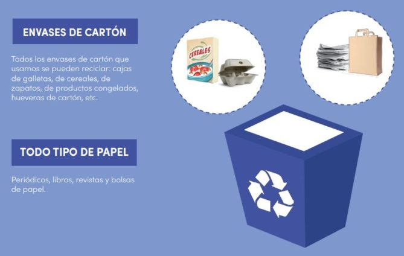
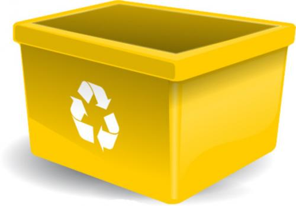
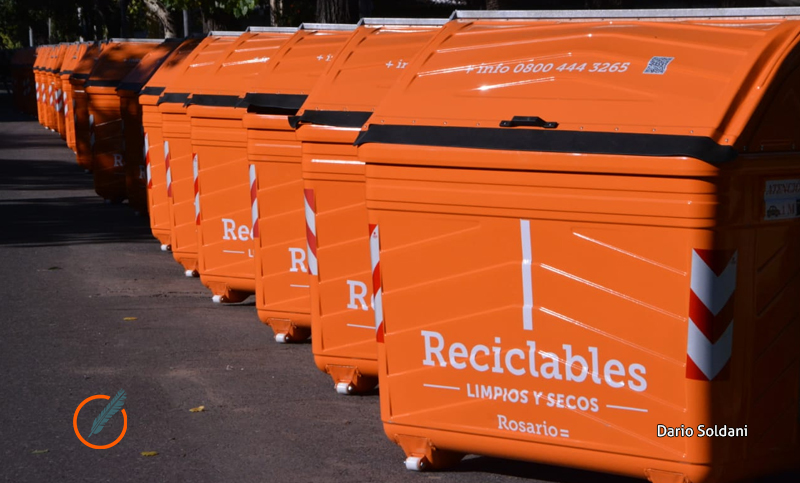
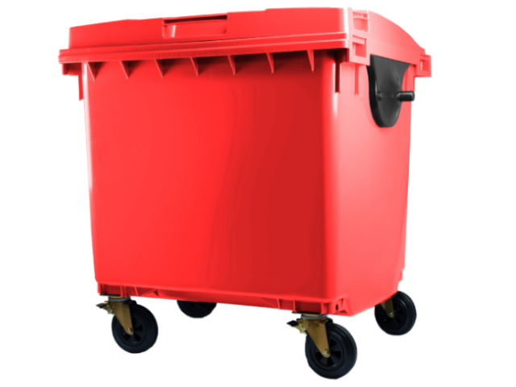
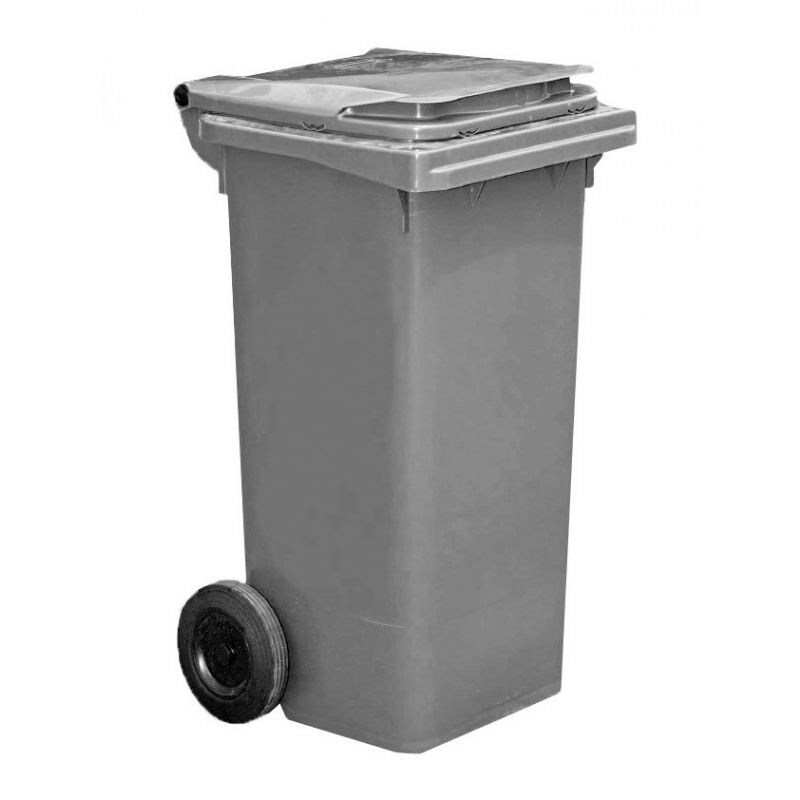

INFORMACION SOBRE EL TEMA
Bienvenido a la sección de información, aquí podrás hacer una retro alimentación del tema propuesto en el juego y además si deseas profundizar mas el tema, puedes aprender con la siguiente información:
¿QUE ES EL ALMACENAMIENTO DE DESECHOS SOLIDOS?
Es la acción del usuario de colocar temporalmente los residuos sólidos en recipientes, depósitos, contenedores retornales o desechables, mientras se procesan para su aprovechamiento, transformación, comercialización o se presentan al servicio de recolección para su tratamiento o disposición final.
Tipos de Recipientes
Contenedor Azul: Es el correspondiente para depositar papel y cartón. Este tipo de contenedores esta diseñado para almacenar cualquier tipo de cartón procedente de cajas, envases de cartón y cualquier tipo de papel como periódicos, revistas, documentos, folletos, papeles de envolver, pancartas de publicación, entre otros.
 Contenedor Amarillo: Es el adecuado para reciclar plásticos, latas y envases, en este tipo de contenedores se almacenan todo material que este hecho a base de plástico, como botellas de plástico, envases de alimentos, bolsas de plástico, briks de leche, etc.
 Contenedor Verde: Es el destinado para depositar el vidrio, en esta categoría deben reciclarse botellas de vidrio, tarros, trozos de espejo y cristales, entre otros.
.jpg)
Contenedor Naranja: Sirve para reciclar restos orgánicos.
 Contenedor Rojo: Es el destinado a contener residuos tóxicos y peligrosos, como desechos hospitalarios o baterías.
 Contenedor Gris: Es el destinado a contener la basura domestica y residuos que no encajan en las otras categorías.

WebGrafia
Información Basada en: Contenedores para el reciclaje